This lecture is a provisional outline written to hold the slot for Chemometrics II while a subject-matter contributor is recruited. It sketches the standard applications at a general level only.
Treat every claim as provisional and subject to expert review.
No specific instrument, dataset, threshold, or performance number here is authoritative — where a concrete value would normally appear, the text says so rather than inventing one.
Do not teach from this unit as-is. It must be reviewed, corrected, and fleshed out by someone with hands-on chemometrics experience before it is used in class.
Reviewer checklist appears in the speaker notes throughout, tagged [REVIEW].
About this lecture
Chemometrics I introduced the setting: a spectrum is a high-dimensional vector, samples stack into a wide matrix, and PCA-style methods find structure in it. Today we turn to what we do with such data in practice.
By the end you should be able to:
frame a spectroscopy problem as either classification (which group?) or regression / calibration (how much?),
describe multivariate calibration and why spectra need it rather than plain lm,
explain what calibration transfer is and why a model can fail on a second instrument,
recognise multivariate process / quality control on scores and residuals,
state why variable selection helps and name a couple of standard approaches,
validate a model honestly with cross-validation and report RMSEP.
This is an applications and vocabulary day, built on the machinery from PCA, The OPLS model, and Chemometrics I.
Why a biologist should care
Spectroscopy gives a fast, cheap, often non-destructive read-out that stands in for a slow wet-lab assay. Some recurring biological uses:
Near-infrared (NIR) / infrared (IR): composition of grain, feed, tissue, or fermentation broth — e.g. protein, moisture, or metabolite content without a full chemical assay.
Raman: label-free readout of cells and tissue; distinguishing cell states or identifying microbial isolates.
Mass spectrometry / NMR (metabolomics): hundreds to thousands of features per sample, used to separate phenotypes or detect a metabolic shift.
In every case the raw signal is many correlated numbers per sample, and the biological answer — a concentration or a class label — is hidden in their pattern, not any single channel.
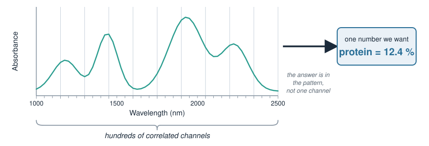
The data shape: wide and collinear
Stack \(n\) samples, each measured at \(p\) wavelengths, into a matrix \(X\) (\(n \times p\)), with a target \(\mathbf{y}\) (a property to predict, or a class):
Wide: often \(p \gg n\) (far more wavelengths than samples).
Collinear: neighbouring wavelengths are highly correlated — they carry nearly the same information.
Ordinary least squares (lm) breaks here: with \(p \gg n\) and collinear columns, \(X^\top X\) is not invertible and the fit is unstable. This is exactly the problem the latent-variable methods from PCA and The OPLS model were built to solve.
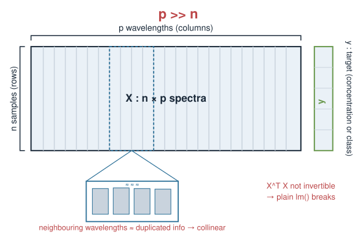
Preprocessing comes first
Raw spectra carry nuisance variation — scatter, baseline drift, path-length differences — that has nothing to do with the biology. Standard preprocessing steps (named here for recognition; details belong to Chemometrics I / an expert pass):
Baseline / scatter correction: e.g. Standard Normal Variate (SNV), Multiplicative Scatter Correction (MSC).
Centering / scaling: mean-centre columns; sometimes autoscale (unit variance) so no channel dominates by magnitude alone.
Important
Preprocessing choices are part of the model. They must be decided on the training data and re-applied identically to new data — never fit using information from the test set.
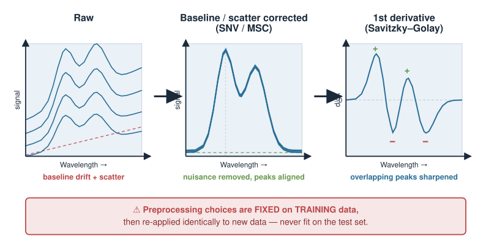
Two questions, two model families
Almost every spectral application is one of two supervised tasks:
Question
Target \(\mathbf{y}\)
“How much / which?”
Typical methods
Regression (calibration)
continuous
How much analyte?
PCR, PLS regression
Classification
categorical
Which group / is it OK?
PLS-DA, LDA, SIMCA, \(k\)-NN
Both share the same trick learned earlier: project the wide, collinear \(X\) onto a few latent components first, then model in that low-dimensional space.
Regression fits a line/plane in latent space (property vs components).
Classification separates groups in latent space.
We take them in turn.
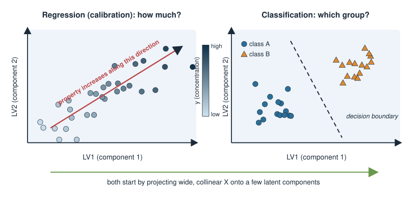
Multivariate calibration (regression)
Goal: predict a continuous property \(y\) (e.g. concentration) from a spectrum \(\mathbf{x}\).
The physical motivation is roughly linear: by the Beer–Lambert idea, absorbance rises with concentration, so a linear model in the (preprocessed) spectrum is a sensible starting point:
\[\hat{y} = b_0 + \mathbf{x}^\top \mathbf{b}\]
But we cannot fit \(\mathbf{b}\) directly by OLS (\(p \gg p\), collinear). Instead:
PCR (Principal Component Regression): run PCA on \(X\), keep the top components, regress \(y\) on the scores.
PLS regression: like PCR, but the components are chosen to align with \(y\) — they explain variation in \(X\)that is relevant to \(y\), not just the largest variation in \(X\).
PLS is the standard chemometrics calibration tool for exactly this reason.
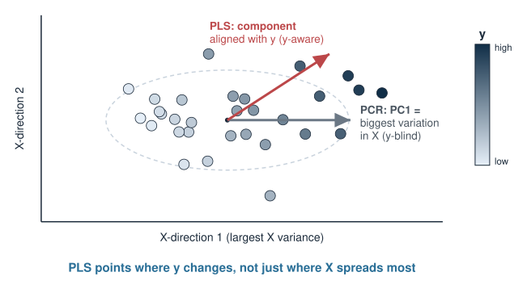
Calibration in R (sketch)
Static illustration only — no packages are installed at render time, so nothing here is executed. The pls package provides plsr().
library(pls)# X: n x p spectra (preprocessed), y: property to predict, in one data framefit <-plsr(y ~ ., data = train,ncomp =10, # try up to 10 latent componentsvalidation ="CV") # built-in cross-validation# how many components? read the cross-validated error, pick the elbowvalidationplot(fit, val.type ="RMSEP")summary(fit)# predict a held-out set with the chosen number of componentsyhat <-predict(fit, newdata = test, ncomp =4)
The single most important decision is how many components to keep — too few underfits, too many overfits. That decision is made by validation, which is the rest of this lecture.
Choosing model complexity
Every latent-variable model has a complexity dial: the number of components (latent variables) kept.
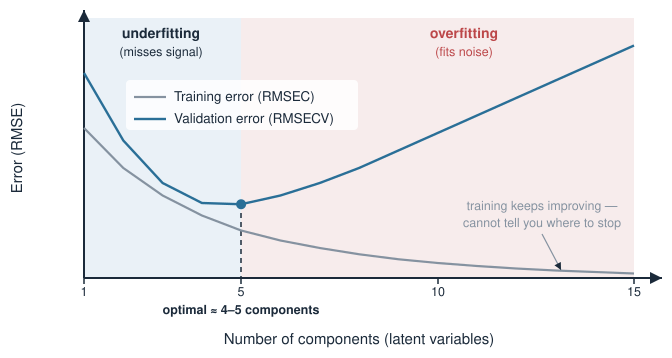
Too few components: the model misses real signal — underfitting (high error everywhere).
Too many components: the model starts fitting noise in the training spectra — overfitting (training error keeps dropping, but error on new samples rises).
The training-set error alone cannot tell you where to stop — it always improves with more components. You need an estimate of error on unseen data. That is what cross-validation provides.
Validation: why a test set is non-negotiable
A model that has seen a sample can predict it well — that proves nothing about future samples.
Calibration (training) error, RMSEC: error on the samples used to fit. Optimistic — always looks better than reality.
Prediction error, RMSEP: error on an independent set the model never touched during fitting or tuning. This is the number you report and trust.
Important
Anything fit on the data — preprocessing, scaling, component count, variable selection — must be decided without the test set. Otherwise the test set is contaminated and RMSEP is optimistic.
The honest workflow: train to fit, validate to tune, test once to report.
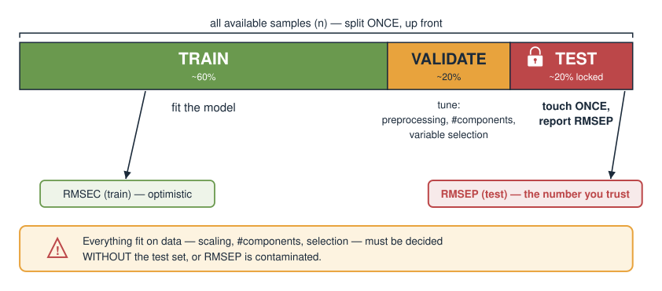
Cross-validation
When data are scarce, holding out one fixed test set wastes samples. \(k\)-fold cross-validation reuses them:
Split the samples into \(k\) roughly equal folds.
For each fold: train on the other \(k-1\) folds, predict the held-out fold.
Every sample is predicted exactly once, by a model that did not see it.
Combine the held-out predictions into one error estimate.
Leave-one-out (LOO):\(k = n\) (each sample its own fold) — common for small spectral sets.
In spectroscopy, samples measured together can be correlated; folds should respect that (e.g. do not split replicate scans of the same specimen across folds).
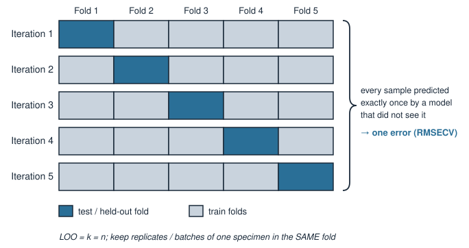
RMSEP and friends
The standard regression error is the root-mean-square error of prediction:
Same units as \(y\) (e.g. mg/mL) — directly interpretable.
Computed on an independent set → RMSEP; from cross-validation → RMSECV; on the training set → RMSEC (optimistic).
Report alongside it:
Bias: mean of \((\hat{y}_i - y_i)\) — a systematic offset (ideally \(\approx 0\)).
\(R^2\) / explained variance: fraction of variation in \(y\) captured.
Pick the component count that minimises RMSECV (or the simplest model within noise of the minimum — the “one-standard-error” idea).
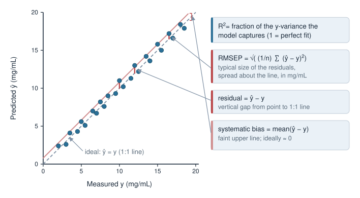
Classification of spectra
Goal: assign each spectrum to a class — tissue type, disease vs control, species of a microbial isolate, pass/fail.
Same latent-projection idea, now separating groups:
PLS-DA: encode the class as a numeric target and run PLS regression toward it; assign by the predicted value. The default chemometrics classifier.
LDA: find the direction that best separates classes (often applied after PCA to tame \(p \gg n\)).
SIMCA: build a separate PCA model per class; a new sample joins the class whose model it fits best (can also say “none of them”).
\(k\)-NN: classify by the nearest training spectra in (latent) space.
Validate with the same discipline: cross-validated misclassification rate, sensitivity/specificity, or a confusion matrix on an independent test set — never the training accuracy.
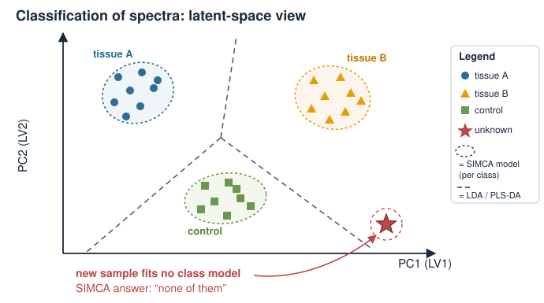
Calibration transfer
A model calibrated on instrument A often fails on instrument B — different detector, different day, different temperature — because the same sample produces a slightly different spectrum.
Calibration transfer adapts a model so it works across instruments/conditions without rebuilding it from scratch:
Measure a small set of transfer / standardisation samples on both instruments.
Learn a mapping that makes B’s spectra look like A’s (or adjust the model coefficients).
Standard families (named for recognition): Direct Standardization (DS) and Piecewise Direct Standardization (PDS), and other spectral-space corrections.
For a biologist this is the difference between a model that lives only in the lab that built it and one that transfers to a collaborator, a clinic, or next year’s instrument.
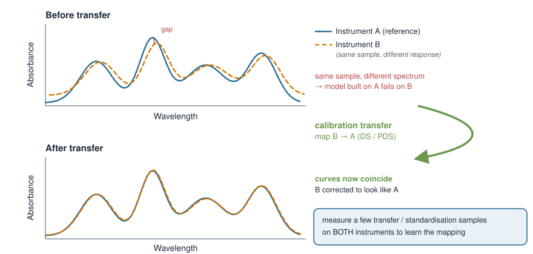
Multivariate process / quality control
Once a good latent-variable model exists, use it to monitor a process or screen samples in real time — multivariate statistical process control (MSPC).
Two complementary alarms per new sample:
Hotelling’s \(T^2\): how far the sample sits from the centre inside the model’s latent space — unusual but of a known type of variation.
\(Q\) / SPE (squared prediction error): how far the sample lies off the model subspace — variation the model has never seen (a new, possibly out-of-spec state).
Plot these on control charts with limits; a point past a limit flags a sample or batch for attention.
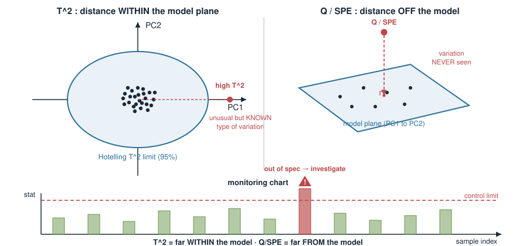
Variable selection
Spectra have hundreds of channels, but often only some carry the relevant signal. Selecting variables (wavelengths) can:
improve interpretability — which spectral regions drive the prediction (a chemically/biologically meaningful band),
sometimes improve robustness by dropping noisy, uninformative channels,
but risks overfitting the selection itself if not validated properly.
Standard approaches, named for recognition:
VIP (Variable Importance in Projection) scores from a PLS model,
selectivity ratio, interval methods (iPLS), or search-based selection.
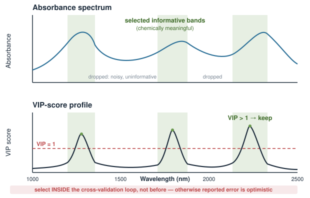
Important
Variable selection is part of model fitting. Select inside the cross-validation loop, not before it — otherwise the reported error is optimistic.
Good practice checklist
Independent of the specific method, a trustworthy spectral model:
preprocesses consistently, with all choices fixed on training data only;
keeps a truly independent test set, touched once, at the end;